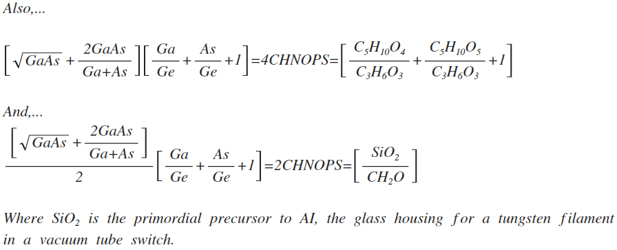
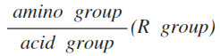
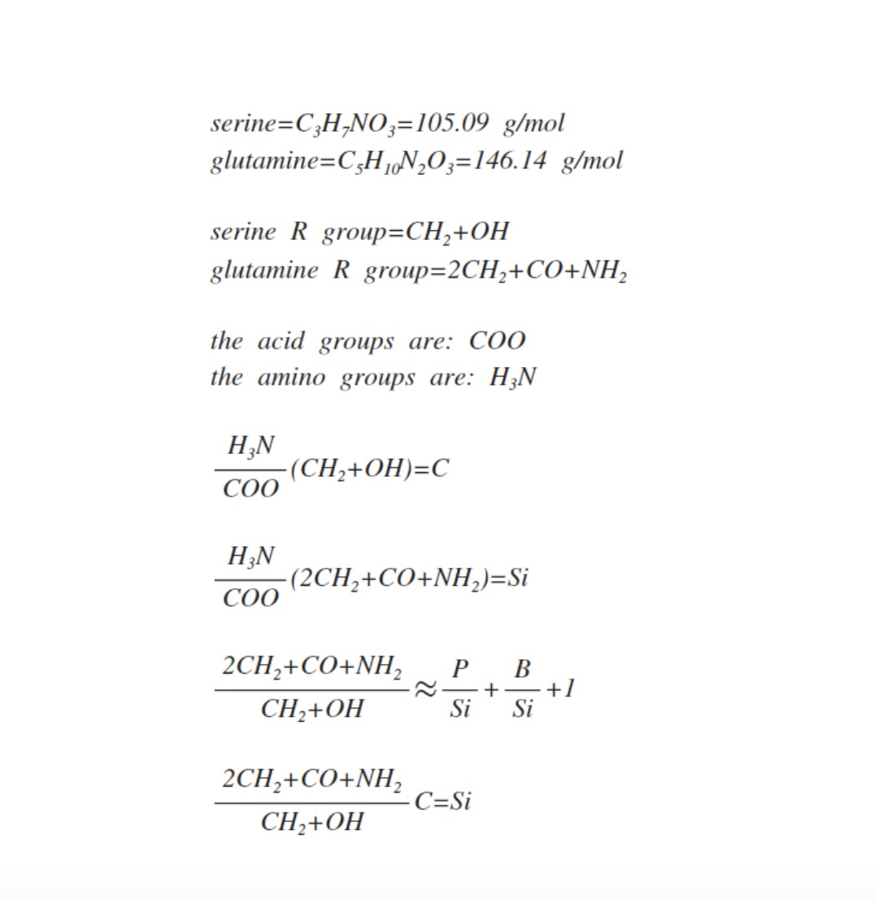

A Thing With Distinct And Independent Existence
A Thing With Distinct And Independent ExistenceEntity Books publishes under a vast selection of genres but specializes in finding the common structure between artificial intelligence (AI) and biological life, especially as a way of finding the path by which biological life came into existence by looking at the path by which AI is formed. Entity Books also publishes research in the study of UFOs and extraterrestrial life in the Cosmos.
It all started when I found a connection between the golden ratio and AI by way of the the central AI element silicon, Si, and the central doping agents phosphorus, P, and boron, B:

Which can be written:

And, of the central biological elements to the golden ratio conjugate:

leading to the connection between artificial intelligence and the biological:

And, can be written:

Writing in the arithmetic mean:

Which is nice because:

Where:

Where ZnSe is zinc selenide, an intrinsic semiconductor used in AI and Ge is germanium, the other central AI element and, As is arsenic and Ga is gallium, the other two central doping agents

A similar thing can be done with Germanium, Ge, and Gallium, Ga, and arsenic, As, this time using CHNOPS (C,H,N,O,P,S) the most abundant biological elements by mass:

The factor by which our original equation has near-perfect equality uses H20, CH4, and NH3 water, methane, and ammonia, the primordial precursors to amino acids, the building blocks of biological life:


It is now March 17, 2019 and I guess if the Universe is to be sublime, it should be elegant, exciting and, designed with sublime aesthetics, which is what I have always done in this project, and it has always panned out, that if

has perfection in the precursors of the amino acids as

Then,...

should have perfection for some aspect of biological components. Since Ga/Ge+As/Ge+1 is approximately three, and Ga/Si+As/Si+1 is approximately 6, it is in other things. One might hazard to guess, since the former is in the amino acids, the latter will be in the sugars and the monomer of the sugars, that are a big part of the biological, ribose, deoxyribose, glyceraldehyde, and formaldehyde used to make glyceraldehyde, ribose, and DNA and RNA, the instructions for biological life. It turns out it is:

Thus, where silicon is associated with the amino acids, germanium is associated with the DNA and RNA.

We talked about the primordial precursors to the amino acids and the precursors to the sugars of RNA and DNA In their connection AI, but what about the amino acids themselves, the building blocks of life?
I had to invent a way to express the amino acids, and I did it like this

I processed the 20 amino acids with the above and found that two of them corresponded to elements and, they nicely were silicon (Si) and carbon (C) precisely the the two elements I wanted to compare, because they are the core elements of AI and organic life, respectively:

The Sublime And Symmetry Breaking by Ian Beardsley on Scribd